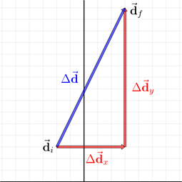

Components
Imagine an object undergoing a displacement from an initial position \({\vec{\mathbf{d}}}_i = (−2.0,\ +3.0)\ \mathrm{m}\) to a final position \({\vec{\mathbf{d}}}_f = (+3.0,\ +15.0)\ \mathrm{m}\).

- The displacement can be calculated — just like for 1D — as the change in position: $$\begin{align}\Delta\vec{\mathbf{d}} &={\vec{\mathbf{d}}}_f-{\vec{\mathbf{d}}}_i \\&= (+3.0, +15.0)\ \mathrm{m} − (−2.0, +3.0)\ \mathrm{m}\end{align}$$
- Because the motion is 2D, the positions are ordered pairs with \(x\) and \(y\) coordinates.
- Arithmetic is performed on the components separately...
- In the \(x\) direction the motion from −2.0 to +3.0 m gives a displacement of +5.0 m.
- In the \(y\) direction the motion from +3.0 to +15.0 m gives a displacement of +12.0 m.
$$\Delta\vec{\mathbf{d}}= (+5.0, +12.0)\ \mathrm{m}$$
- When we use the \(x\) and \(y\) components to describe a vector, this is called the Cartesian form of the vector (named after French mathematician Rene Descartes.)
- In the vector diagram above, the displacement vector is drawn as a blue arrow from \({\vec{\mathbf{d}}}_i\) to \({\vec{\mathbf{d}}}_f\) and is labelled \(\Delta\vec{\mathbf{d}}\).
- The \(x\) and \(y\) components are drawn tip-to-tail as red arrows and are labelled \(\Delta{\vec{\mathbf{d}}}_x\) and \(\Delta{\vec{\mathbf{d}}}_y\).
- For a vector diagram to be accurate, we must always use the same scale for both the \(x\)- and \(y\)-axis.
Cartesian → Polar Conversion
As the vector diagram shows, a vector and its components form a right-angle triangle.
- The \(x\) component will be the ‘Adjacent’ side, the \(y\) component will be the ‘Opposite’ side, and the resultant displacement will be ‘Hypotenuse’.
- We can use trigonometry to calculate the magnitude and direction (polar form) of the vector: $$\left|\Delta\vec{\mathbf{d}}\right|=\sqrt{\Delta{\vec{\mathbf{d}}}_x^2+\Delta{\vec{\mathbf{d}}}_y^2}$$ $$\tan{\theta}=\frac{\Delta{\vec{\mathbf{d}}}_y}{\Delta{\vec{\mathbf{d}}}_x}$$
- Substituting the values +5.0 m and +12.0 m for the \(x\) and \(y\) components gives us the polar form of the vector:$$\Delta\vec{\mathbf{d}} = 13.0\ \mathrm{m}\ [67.4°]$$
- When calculating the direction using the tan−1 operation, it is important to know that your calculator will give the correct answer only when the \(x\) component is positive.
- For cases where the \(x\) component is negative, you must add 180° to the angle your calculator gives!
Example 1
The velocity of a bird is (–2.0, 4.0) m/s. Express this is polar form.
$$\left|\vec{\mathbf{v}}\right|=\sqrt{{\vec{\mathbf{v}}}_x^2+{\vec{\mathbf{v}}}_y^2}$$
$$\left|\vec{\mathbf{v}}\right|=\mathrm{\sqrt{(–2.0\ m/s)^2 + (4.0\ m/s)^2} = 4.5\ m}$$
$$\tan{\theta}=\frac{{\vec{\mathbf{v}}}_y}{{\vec{\mathbf{v}}}_x} = {4.0\over -2.0} = -2.0$$
$$\theta=\tan^{-1}(-2.0) + 180^\circ = 117^\circ$$
Polar → Cartesian Conversion
When a vector is known in polar form and we want to convert it to Cartesian form, we can use the other trigonometry relations: sine and cosine.
- The trigonometry relations apply not just to displacement vectors but to any vector, including velocity, acceleration, and force.
Example 2
Suppose a force of 50.0 newtons is applied with a direction of 160° to push an object up an incline. Calculate the Cartesian components.
$${\vec{\mathbf{F}}}_x=\left|\vec{\mathbf{F}}\right|\cos{\theta}=-47.0\ \mathrm{N}$$
$${\vec{\mathbf{F}}}_y=\left|\vec{\mathbf{F}}\right|\sin{\theta=+17.1\ \mathrm{N}}$$